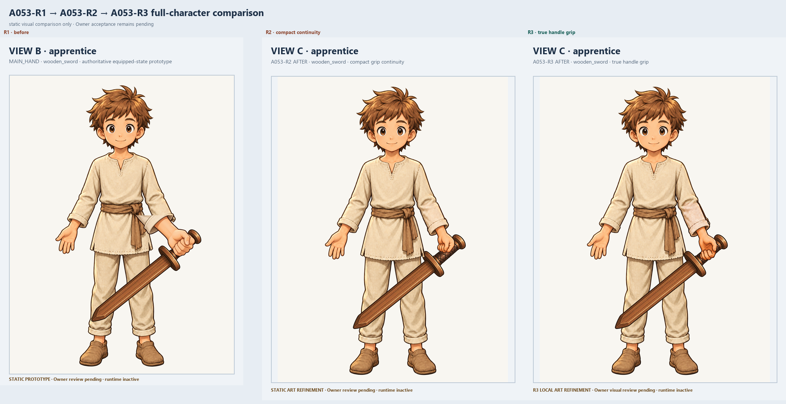
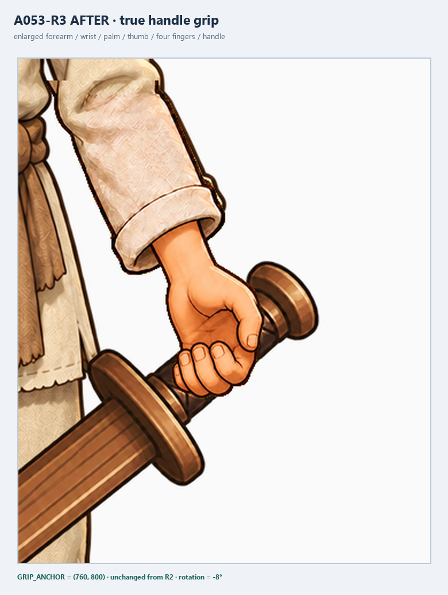
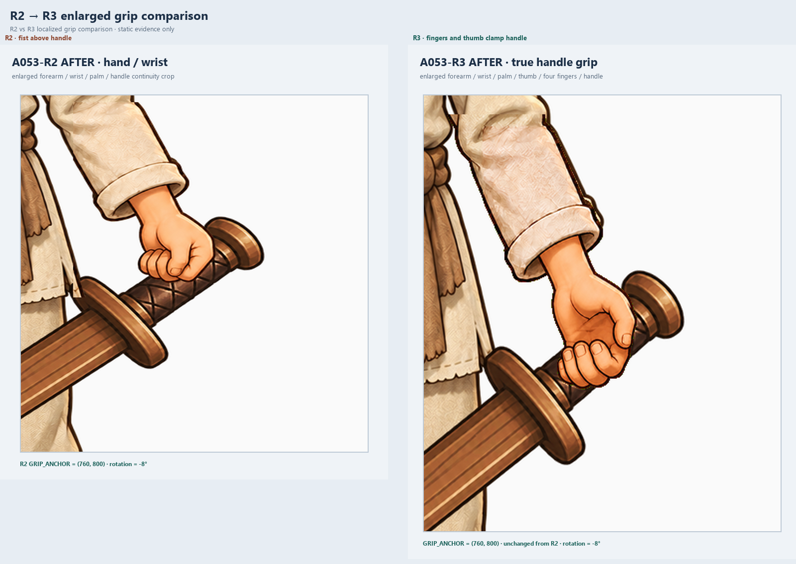
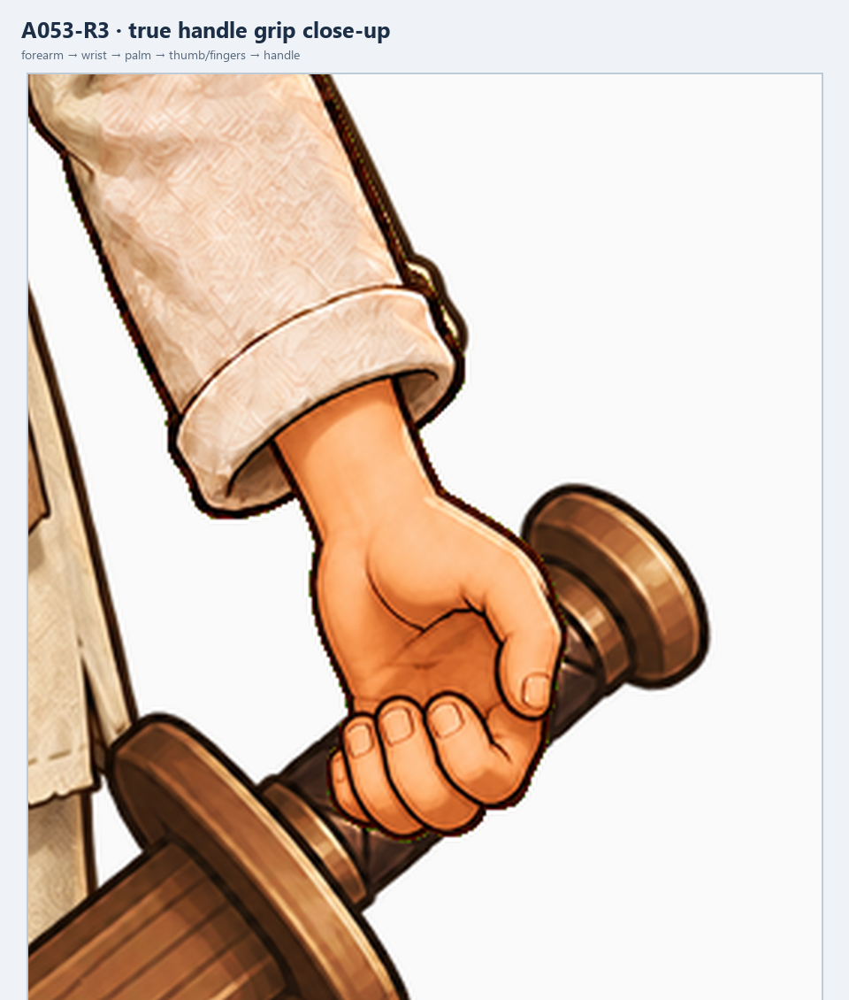
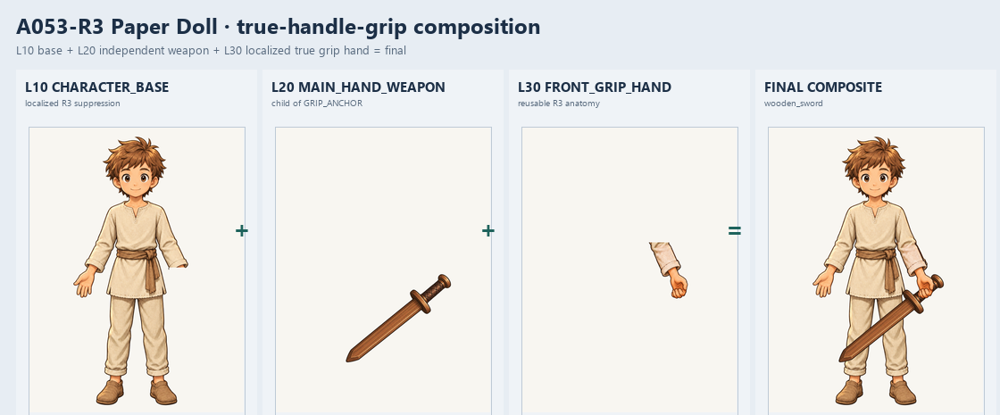
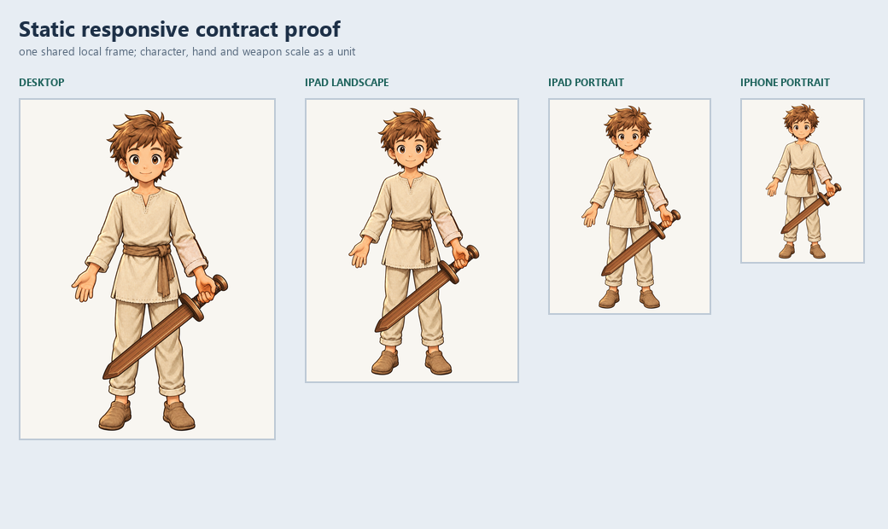
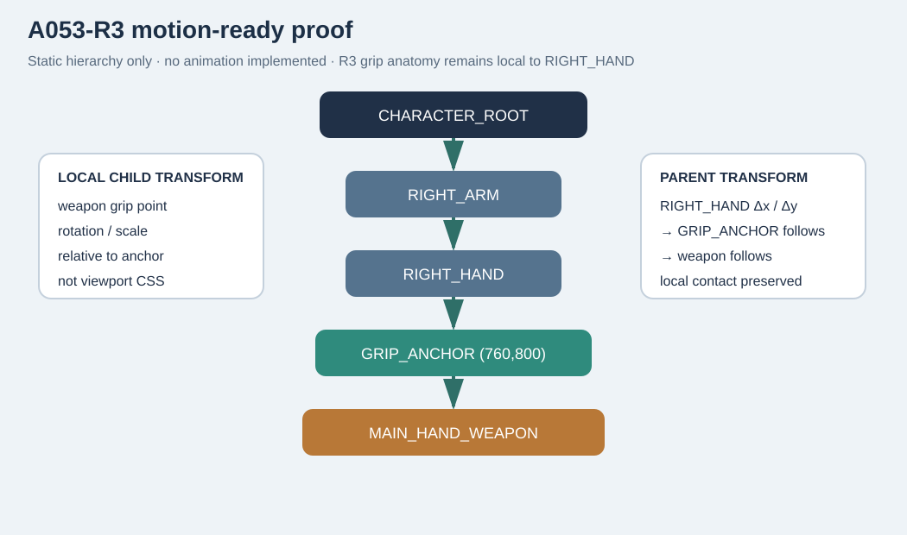

A053-R3 · apprentice / MAIN_HAND / wooden_sword
STATIC LOCAL ART REFINEMENT · PENDING OWNER VISUAL REVIEW
R3 refines only the localized grip anatomy so the thumb and four fingers visibly clamp the independent wooden-sword handle. R2 compact proportions, wrist/forearm continuity, the three-layer Paper Doll hierarchy, server-owned player_inventory.equipped presentation contract, and Loadout OFF are preserved. Owner visual acceptance is not granted.
R1 → R2 → R3 full-character comparison

Grip anatomy review





Paper Doll composition



Contract: a053_r3_contract.json